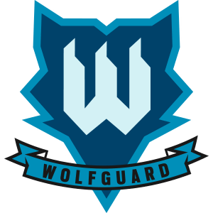

Név: Isaac Nunes Oliveira
Születési dátum:1989 November 24.
Születési hely: Ponta Delgada, Portugália
“Acceptable casualties? Nah.”
Nunes zűrzavaros gyermekkorát az Açores-szigeteki szigetcsoportban töltötte, ahol földrengések és tenger alatti kitörések gyakran rázták meg a közösségeket, és megtanulta az önzetlen segítségnyújtás értékét. Ezt a tanulságot mindenben alkalmazta, még amatőr sportolóként is biciklizés és kajakozás közben, amikor gyakran visszafordult, saját teljesítményének rovására, hogy segítsen a társainak, akik nehézségekkel vagy sérülésekkel küzdöttek. Hajókirándulásokon apjával Nunes megtalálta a kapcsolatot az óceánnal, ami karrierje útját kijelölte. Ragaszkodott ahhoz, hogy segítsen a hajó navigálásában és javításában, és az ébredődeszkázás révén felfedezte a szabadság érzését; egy kikötő nélküli vágyat, amelyet csak az otthona elhagyásával lehetett kielégíteni. Az előtte álló út világos volt, és elment a szárazföldre, hogy pályafutását a tengerészek között folytassa. Bár Nunes kiválóan tanult új készségeket, és könnyen felvette a versenyt társaival a fizikai tesztek során, természetes vezetőként is nagyra értékelték, és ragaszkodott a polgári lakosság biztonságához. Miután átállt és elegendő tapasztalatot szerzett, bekerült a DAE csapatába. Humanitárius nézete előnyt jelentett, mivel gyakran dolgozott civil területeken, néha visszatérve szigetcsoportjának otthonába. Az általa kifejlesztett fagygránát, amely megállította a robbanóanyagok detonációját, nagy feltűnést keltett, ami miatt Gustave "Doc" Kateb szakértő felvette a Rainbow-ba.
Szervezet: Wolfguard 